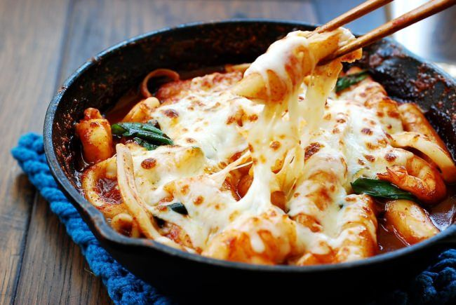

Tteokbokki

A Symphony of Spicy and Savoury Flavors
Infamously known as Korea's Most Popular Street Food, Tteokbokki or Spicy Rice Cakes is a match made in heaven and it's not hard to understand why. Keep it simple with rice cakes marinated in the spicy gouchujang sauce or add favorite editions such as cheese, fish cakes and ramen noodles.
Ingredients
- 500 gr fresh/frozen Korean rice cakes
- 2 cups dashi/Korean soup stock
- 1 cup grated mozzarella cheese
Sauce
- 3 tbsp gochujang (Korean chili paste)
- 2 tsp gochugaru (Korean chili flakes)
- 1 tbsp granulated sugar
- 1/2 tbsp corn syrup/granulated sugar
- 1 tbsp soy sauce
- 2 tsp minced garlic
Garnish
- 1 tsp sesame oil
- 3-4 stalks of green onion/scallions finely chopped
- toasted sesame seeds
Steps
- If you are using frozen rice cakes, submerge them in warm water for 20-30 minutes or until they soften. If you are using fresh rice cakes, skip this step.
- In a small bowl, combine all the sauce ingredients until well combined.
- Heat a large frying pan or skillet over medium-high heat. Add the soup stock and rice cakes. Let the stock boil. Then, add the sauce and stir until well incorporated. Let the sauce boil until it thickens.
- After the sauce has thickened to your liking, move the rice cakes to the center of the pan (to cushion the cheese and prevent it from sinking into the sauce) and spread mozzarella cheese on top. Close the lid. Cook until the cheese is fully melted. Turn off the heat.
- Drizzle sesame oil and add scallions and sesame seeds if desired.
- Serve hot while the cheese is still melted and enjoy!